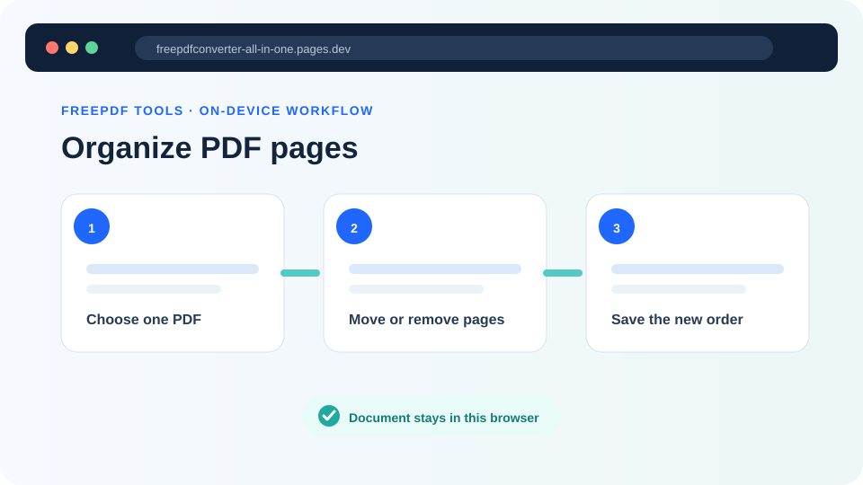
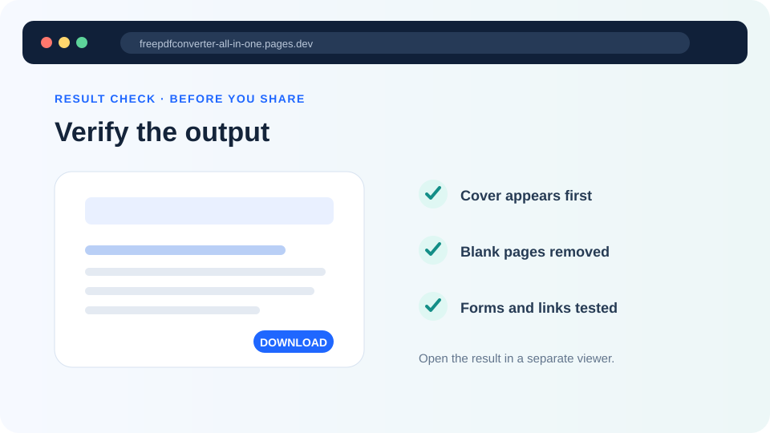

How to delete or rearrange PDF pages free online
Remove blank, duplicate or unwanted pages, put the remaining PDF pages in the correct order and download a new copy without uploading the document.
Updated August 29, 2026 · By FreePDF Tools · 7 minute read


Plan the new PDF before moving pages
Start with a working copy and write down the intended sequence. A submission might need a cover letter, application form, evidence and an appendix. A scanned packet might only need blank backs removed. Clear intent prevents a page that merely looks blank—but contains a small signature, stamp or continuation note—from being deleted by mistake.
Use visible page content rather than the viewer's page counter alone. Printed numbers can differ from PDF positions because covers and front matter are often unnumbered. In the organizer, “Original page 7” means the seventh page object in the source file, not necessarily the number printed on that page.
When should you delete pages from a PDF?
Page deletion is useful for blank scanner backs, duplicated pages, outdated instructions, accidental cover sheets and sections that should not be shared. Inspect every candidate page at readable size before removing it: a page that looks empty in a small thumbnail can still contain a signature, page number, faint scan or form field.
If you only need to share one continuous chapter, extracting a page range with the Split PDF tool can be clearer than deleting everything around it. Use deletion when the pages to remove are scattered through the document or when you also need to change the page order.
How to delete or rearrange PDF pages in the browser
- Open the Organize PDF tool and choose one unlocked PDF.
- Wait for the complete numbered list. The left badge shows the page's output position; the label records its source position.
- Use the up or down arrow for a small move, or the first and last controls for a long move.
- Use × only when the page should be omitted from the new file. The tool keeps at least one page.
- Select Save organized PDF. Open the downloaded copy in a separate viewer and compare it with your plan.
Ready to set the page order?
The source is read locally and the new page sequence is created in your browser.
What page copying can affect
The tool copies retained pages into a new PDF rather than converting them to images. Ordinary text, vectors and page images therefore avoid an intentional full-page raster conversion. However, some PDF features live outside individual page objects. A bookmark may point to a source-page reference; an internal link can target a page that was deleted; an interactive form can share document-level field definitions; and a digital signature covers a precise earlier byte sequence.
For that reason, treat the organizer as a page-content workflow. If the PDF contains fillable forms, portfolios, attachments, layers, multimedia, accessibility tagging, bookmarks or signatures, test those features deliberately. Saving any changed PDF normally invalidates existing digital signatures even when the visible signed page looks unchanged.
A reliable five-point result check
- Check that the first and last pages are correct.
- Move through every page transition and confirm no duplicated or missing section.
- Search for a known phrase to confirm searchable text still behaves normally.
- Test links, form controls and bookmarks that matter to the recipient.
- Compare the final page count with your plan and keep both filenames distinct.
If the output is too large for a phone to process, remove pages in smaller logical sections or use a laptop with more memory. If the PDF is password-protected, use Unlock PDF with the known password first. A malformed source may need to be re-exported from the application that created it.